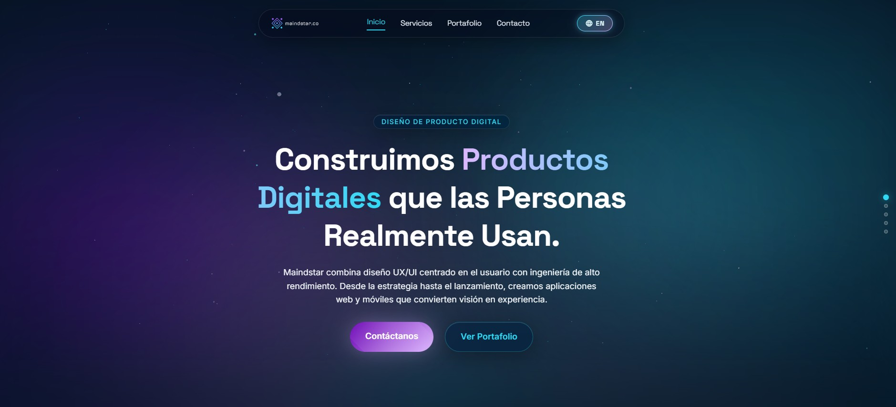
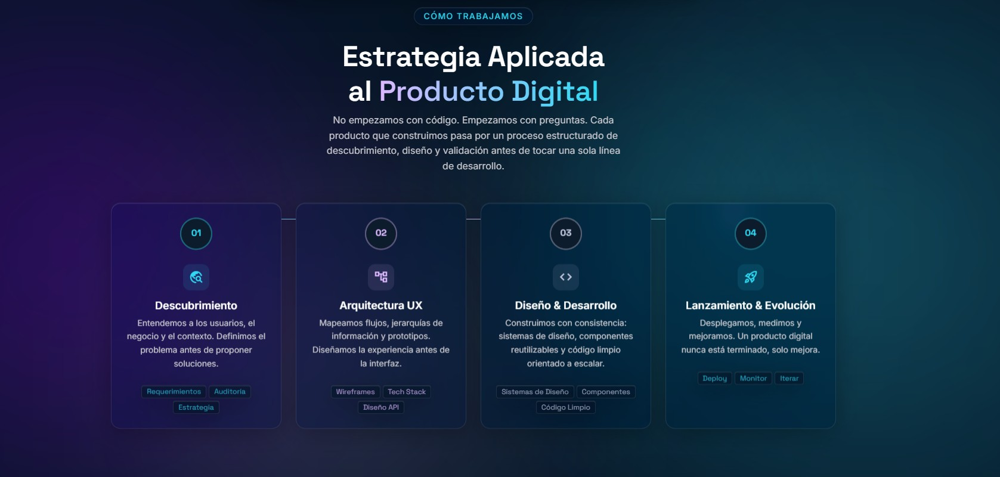

Mobile Apps · Web Platforms · UI/UX
Maindstar
Brand identity, product design, and digital ecosystem for a Medellín-based tech studio building the next generation of mobile and web experiences.
Puede ir a visualizar la página funcional

Overview
Maindstar is a digital product studio from Medellín with a clear mission: turn bold ideas into polished products. They design and develop mobile applications, web platforms, and digital experiences for companies across Latin America combining engineering precision with a design-first mindset.
The challenge was building a brand and digital presence that felt as capable as the team behind it technical enough to earn trust with enterprise clients, yet modern and approachable enough to resonate with startup founders and growth-stage companies.
Services
- Brand Identity
- Web Design
- UI/UX for Mobile Apps
- Design System
Industry
Tech / Digital Products
Client
Maindstar Studio
What They Build
04Mobile Applications
Native and cross-platform apps built for iOS and Android. From ideation to App Store Maindstar handles architecture, UI, and deployment with a product-centric approach that prioritizes performance and retention.
Web Platforms
Scalable web applications and SaaS platforms that handle real-world complexity. Admin dashboards, client portals, e-commerce systems engineered with modern stacks and designed for the people who use them every day.
Websites
High-impact marketing sites and corporate presences that convert. Fast, accessible, and built to rank every page is a precision artifact, not a template. The digital front door of a brand done right.
UX & Interface Studies
User research, usability testing, heuristic audits, and interaction design. Maindstar delivers experience insights that turn friction points into conversion opportunities backed by data, refined by craft.
Design Approach
Tech-first.
Human-centered.
Maindstar's aesthetic lives at the intersection of precision engineering and bold visual identity. Dark interfaces with high-contrast hierarchy, motion that communicates system state, and a brand voice that speaks directly to builders and founders.
Discovery & Strategy
Deep-dive into the client's domain, competitors, and users. We define the product vision before touching a single pixel.
Architecture & Wireframes
Information architecture, user flows, and low-fidelity wireframes that validate structure before visual execution.
Visual Design & Prototyping
High-fidelity UI with a full design system tokens, components, motion specs, and interactive prototypes for stakeholder validation.
Handoff & Iteration
Developer-ready specs, asset exports, and continuous design support through build. Shipped products, not Figma files.
Impact
Brand Identity
A mark built for the digital frontier
The Maindstar identity reflects the duality of the studio: structured and systematic on the inside, expressive and memorable on the outside. The wordmark was designed to hold weight at any size from app icon to billboard.
Typography: geometric, mono-influenced. Color: deep blacks with electric accents. Motion: purposeful, never gratuitous. Every decision traces back to a single north star clarity that commands attention.
